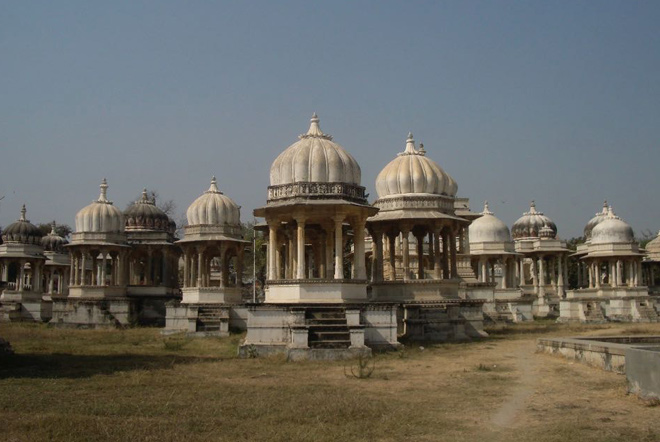
.
About 2km east of Udaipur, at Ahar, are more than 250 restored cenotaphs of the maharajas of Mewar, forming a spectacular, if ghostly, city of snowy domes built over 350 years. About 19 former maharajas were cremated here.
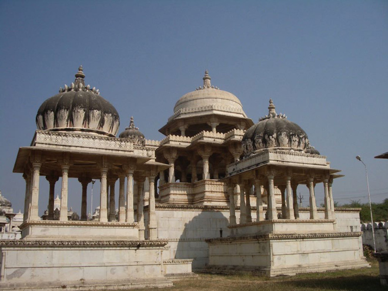
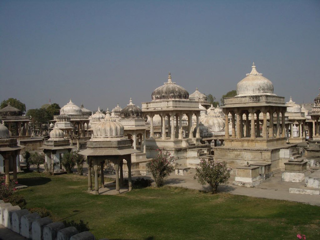
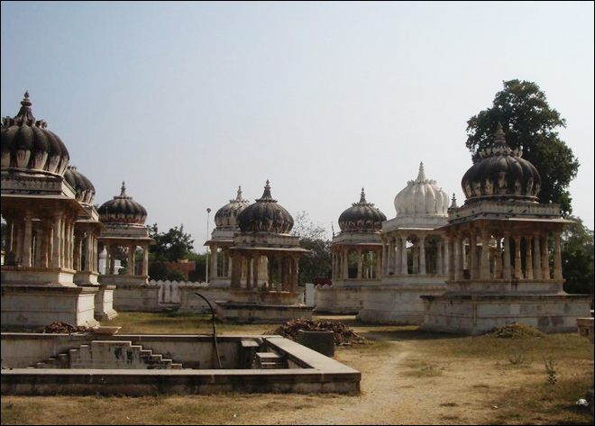
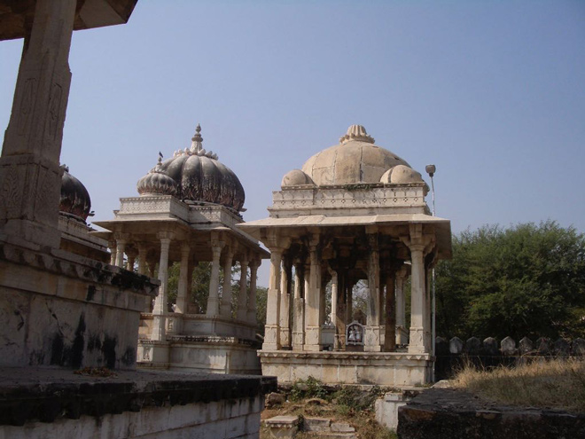
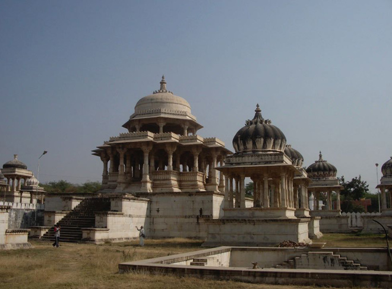
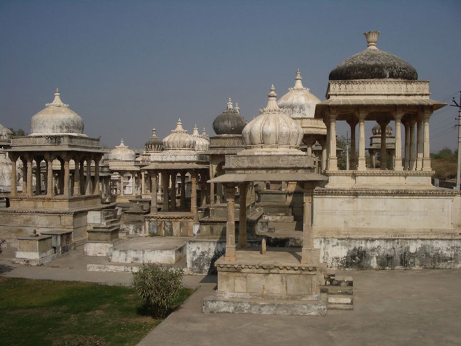
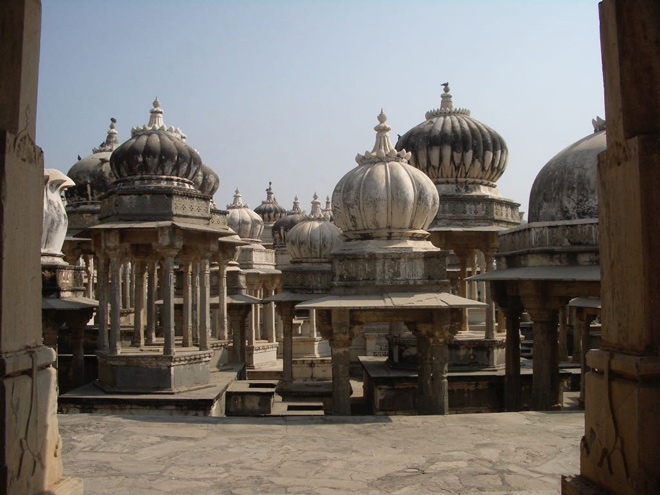
The peace and tranquillity of this remote spot was shattered when what sounded like a Mariachi band started up. It was the local trumpet and drum band practising for a forthcoming parade ...
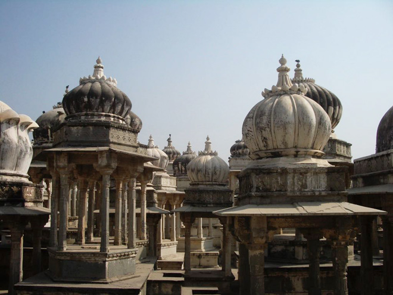
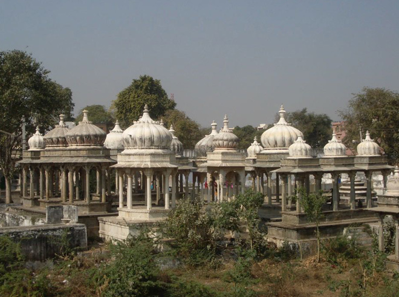
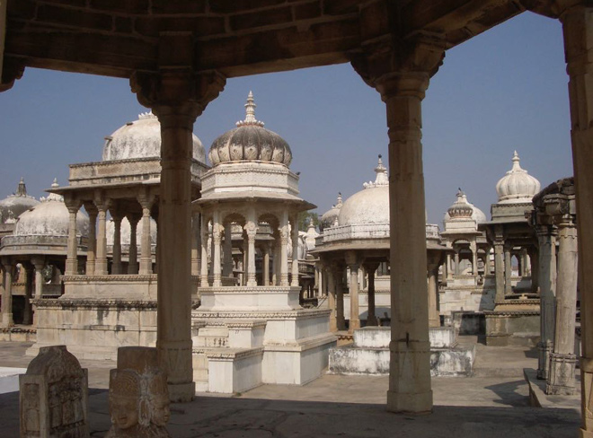
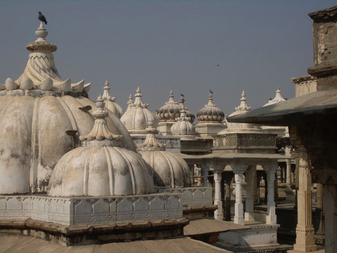
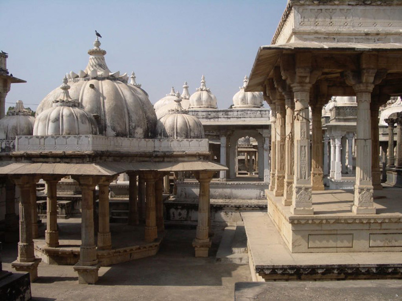
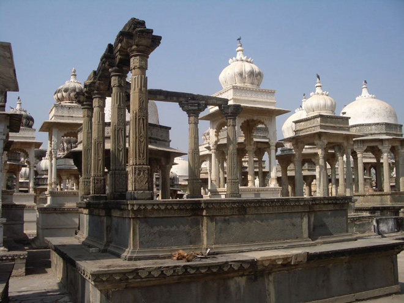
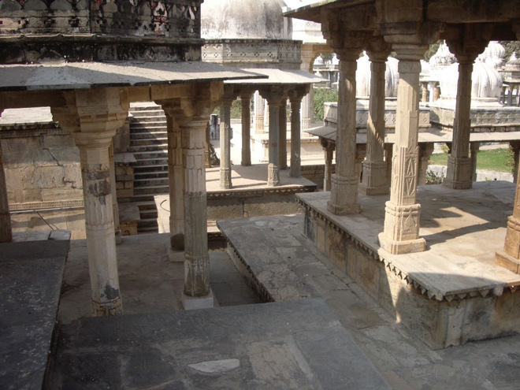
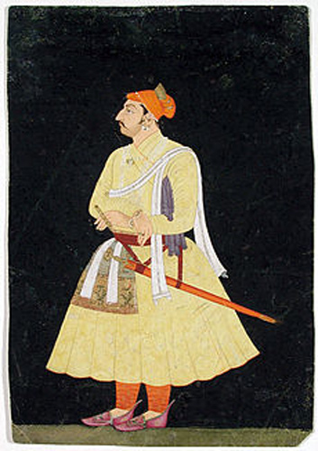
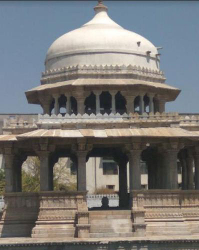
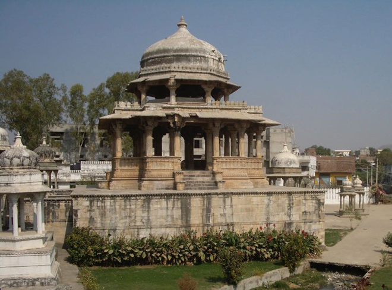
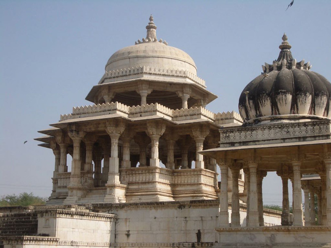
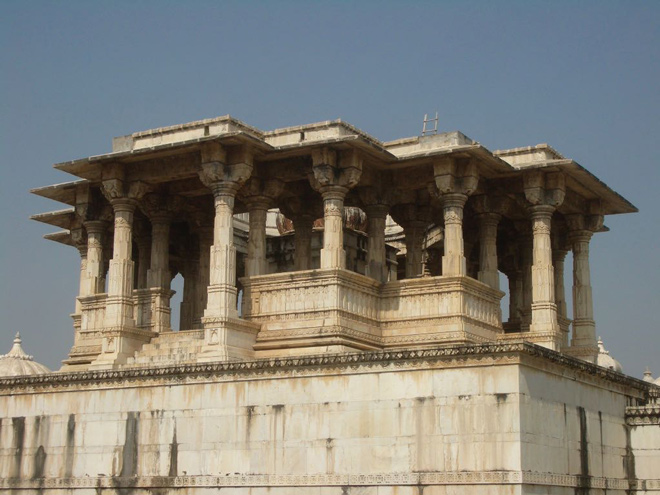
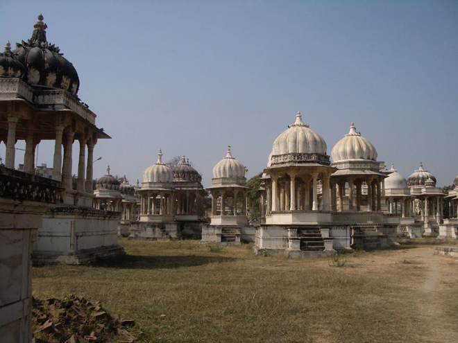
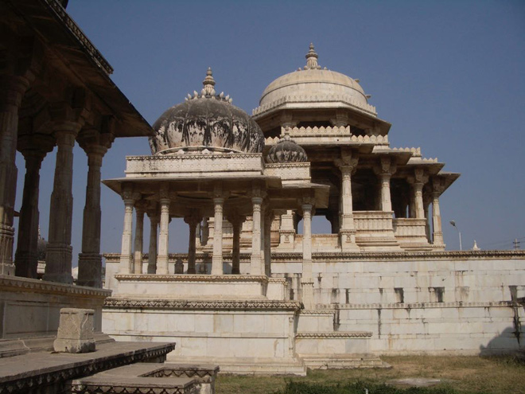
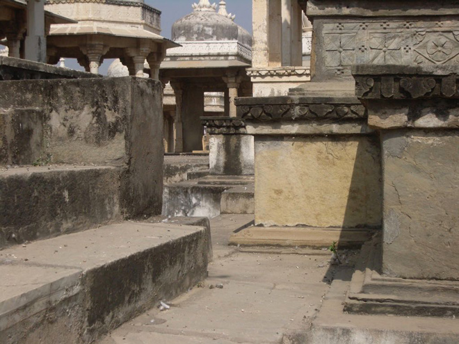
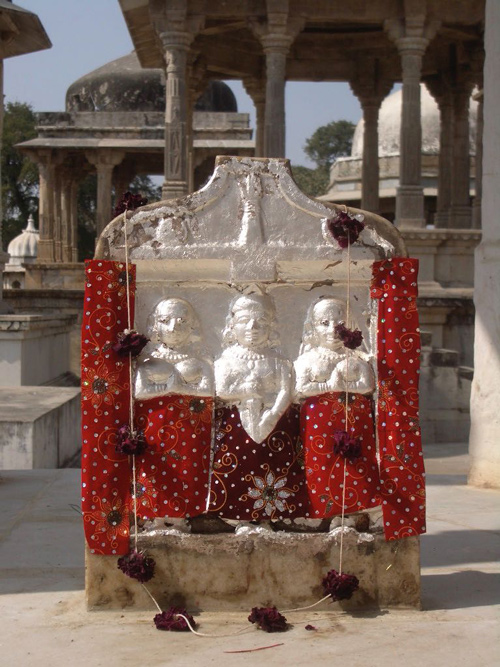
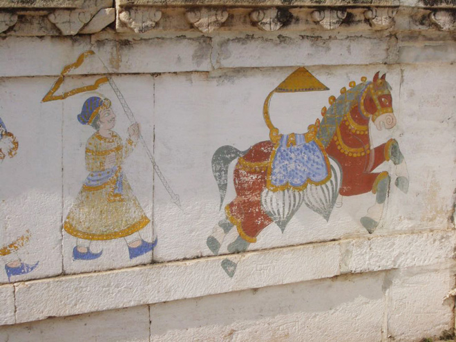
One of the cenotaphs was cracked and it was alarming to be able to see right down into the tomb ...
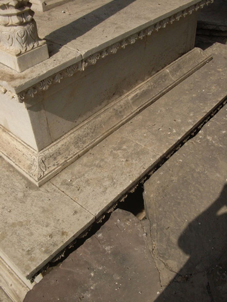
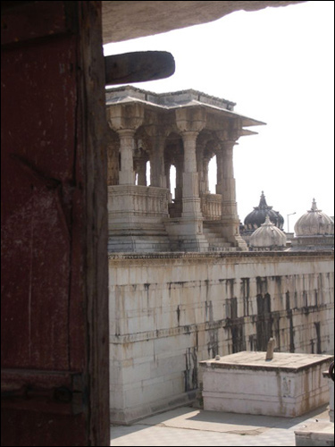